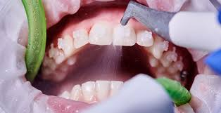

Limpieza Dental: Mantén tu Sonrisa Fresca y Saludable con Cuidado Preventivo
La limpieza dental profesional es un componente esencial de una buena higiene bucal y desempeña un papel fundamental en la prevención de enfermedades dentales. Este tratamiento preventivo elimina la acumulación de placa bacteriana y sarro, promoviendo una sonrisa fresca, saludable y libre de enfermedades.
En nuestra clínica, entendemos que una limpieza dental regular es fundamental para mantener la salud bucal a largo plazo. Por eso, ofrecemos limpiezas dentales profesionales de alta calidad para pacientes de todas las edades, adaptadas a tus necesidades individuales y proporcionadas por nuestro equipo de higienistas dentales altamente capacitados.
Durante una limpieza dental, nuestro higienista dental utilizará herramientas especializadas para eliminar suavemente la placa y el sarro de la superficie de tus dientes, incluidas áreas difíciles de alcanzar. También te proporcionaremos una revisión exhaustiva de tu salud bucal y te brindaremos consejos y recomendaciones para mejorar tu rutina de cuidado dental en casa.
Además de eliminar la placa y el sarro, una limpieza dental profesional puede ayudar a prevenir enfermedades dentales, como la caries dental y la enfermedad de las encías, y reducir el riesgo de problemas de salud general, como enfermedades cardíacas y diabetes.
Si buscas mantener tu sonrisa fresca, saludable y radiante, ¡la limpieza dental profesional es esencial! ¡Contáctanos hoy mismo para programar tu limpieza dental y dar el primer paso hacia una sonrisa más brillante y una salud bucal óptima!
